방사선비파괴검사산업기사 (2019-09-21 기출문제)
1과목: 비파괴검사 개론
1. 다음 중 초음파탕상검사 시 탐상결과에 미치는 영향이 가장 적은 것은?
- 시험체의 표면이 거친 경우
- 결정 입자의 크기가 큰 경우
- 시험편의 두께가 일정한 경우
- 시험체의 탐상 표면과 저면이 평행하지 않은 경우
(정답률: 79%)

2. 누설률을 구하는 식으로 옳은 것은? (단, P:기체의 압력, Q:누설물, V:상자의 부피, t:기체를 모르는 시간이다.)
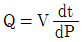
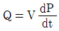
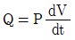
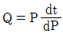
(정답률: 66%)
3. 비파괴검사에 대한 다음 설명 중 옳은 것은?
- 어떠한 비파검사 방법을 적용하여도 모든 종류의 바파괴검사 방법을 적용하는 것이 가능하다.
- 어떠한 시험체라도 모든 종류의 비파괴검사 방법을 적용하는 것이 가능하다.
- 비파괴검사의 목적은 결함이 존재하지 않는 완벽한 제품을 제조, 판매하는데 있다.
- 비파괴검사는 재료의 물리적 성질이 결함의 존재에 의하여 변화하는 사실을 이용한다.
(정답률: 71%)
4. 형광 침투를 사용하여 검사하는 과정에서 현상 전에 세척이 제대로 되었는지 확인하는 방법은?
- 시험물 표면을 자연광 밑에서 관찰한다.
- 시험물 표면을 자외선등 밑에서 관찰한다.
- 시험물 표면에 현상제를 약간 도포해 본다.
- 시험물 표면을 리트머스 시험지로 문질러 본다.
(정답률: 85%)
5. 다음의 비파괴검사법 중 시험체의 재질에 따른 제한을 가잔 적게 받는 것은?
- 자분탐상시험
- 와전류탐상시험
- 침투탐상시험
- 방사선투과시험
(정답률: 72%)
6. 황동의 내식성을 개선하기 위하여 7.3 화동에 주석을 1% 정도 첨가한 합금은?
- 톰백
- 니켈 황동
- 네이벌 황동
- 애드미럴티 황동
(정답률: 59%)
7. 수소저장합금에 대한 설명으로 틀린 것은?
- 수소저장합금은 수소가스와 반응하여 금속수소화물이 된다.
- 금속수소화물은 단위부피(1cm3) 중에 1022개의 수소원자를 포함한다.
- 수소저장합금은 수소를 흡수ㆍ저장할 때에는 수축하고, 방출할 때에는 팽창한다.
- 수소가스를 액화시키는 데데는 -253℃정도의 저온 저장 용기가 필요하다.
(정답률: 60%)
8. 알루미늄의 질별 기호와 그 정의가 틀린 것은?
- O : 어닐링한 것
- H : 가공경화 한 것
- W : 제조한 그대로의 것
- T : 열처리에 의해 FㆍOㆍH이이의 안정한 질별로 한 것
(정답률: 58%)
9. 합금주철에서 각각의 합금원소가 주철에 미치는 영향으로 옳은 것은?
- Ni은 탄화물의 생성을 촉진한다.
- Mo은 인장강도, 인성을 향상시킨다.
- Cr은 강력한 베이나이트 안정화 원소이다.
- Si는 주철 중의 Fe3C를 분해하여 흑연화를 저지하는 원소이다.
(정답률: 53%)
10. 소결 제품인 MK강이라고도 불리는 알니코 자석강의 주성분은?
- Mn, Ti, Al
- W, Co, Cr
- Ni, Al, Co
- Mo, Cr, W
(정답률: 70%)
11. 강의 담금질성을 개선시키는데 영향력이 가장 큰 원소는?
- Cu
- Ni
- Si
- B
(정답률: 49%)
12. 정련된 용강을 레이틀 중에서 Fe-Mn, Fe-Si,Al 등으로 완전 탈산시킨 강괴는?
- 킬드강
- 림드강
- 캡드강
- 세미킬드강
(정답률: 71%)
13. 다음 중 비중이 가장 큰 금속은?
- Ti
- Pt
- Cu
- Mg
(정답률: 53%)
14. 냉강 가공한 금속을 풀림(annealing)하였을 때 내부 조직의 변화를 순서대로 나열한 것은?
- 재결정 → 회복 → 결정립 성장
- 결정립 성장 → 재결정 → 회복
- 회복 → 결정립 성장 → 재결정
- 회복 → 재결정 → 결정립 성장
(정답률: 59%)
15. Ni-Cr 강에서 발생하는 결함 중 헤어 크랙(hair crack)의 주요 원인이 되는 원소는?
- S
- O
- N
- H
(정답률: 57%)
16. TlG용접에 사용되는 전극봉 재료의 구비조건으로 틀린 것은?
- 용융점이 높은 것
- 연전도성이 좋은 것
- 저자 방출이 잘 될 것
- 전기 저항률이 높을 것
(정답률: 65%)
17. 다음 중 서브머지드 아크 용접(SAW)에 사용되는 용융형 용제(Fused Flux)의 특징으로 틀린 것은?
- 흡승성이 없다.
- 비드 외관이 아릅답다.
- 합금원소의 첨가가 용이하다.
- 미용융 용제는 다시 사용이 가능하다.
(정답률: 48%)
18. 피복 아크 용접에서 용접 입열을 구하는 공식은? (단, H : 용접입열, E : 아크전압,l: 아크전류, V: 용접속도이다.)
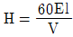
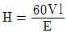
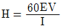
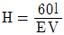
(정답률: 64%)
19. 용접 후 잔류응력을 완화시키는 방법으로 가장 거리가 먼 것은?
- 피닝법
- 응력제거풀림
- 고온 응력 완화법
- 기계적 응력 완화법
(정답률: 44%)
20. 피릿 용접의 기본 기호로 맞는 것은?
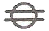
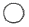
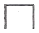
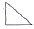
(정답률: 61%)
2과목: 방사선투과검사 원리 및 규격
21. 투과사진콘트라스트를 △D라 할 때, 식별한계콘트라스트(△Dmim)에 대한 설명으로 틀린 것은?
- △D≥△Dmim일 때 결합을 식별할 수 있다.
- △Dmim은 관찰조건에 따라 변한다.
- 투과사진을 관챃하는 방이 밝으면 △Dmim은 커진다.
- 사진관찰기의 밝기가 적절하면 △Dmim은 최대가 된다.
(정답률: 40%)
22. 방사선투과시험 시 명료도(definition) 에 영향을 미치는 사항으로 가잗 거리가 먼 것은?
- 산란방사선
- 필름의 입상성
- 형광증감지의 입상성
- 필름과 증감지의 접촉 상태
(정답률: 45%)
23. 산란비를 줄이는 효과가 있는 촬영조건과 관계가 먼 것은?
- 조사 범위를 좁힌다.
- 시험체-필름 사이의 거리를 적절히 늘린다.
- 필름카세트를 시험체에 밀착시킨다.
- 차폐 마스크를 사용한다.
(정답률: 16%)
24. 자기 유도형 전자 가속장치라고 하며 자석과 변압기의 결합을 이용해서 전자를 회전궤도에서 매우 높은 에너지로 가속시키는 고에너지의 X선 장치는?
- 베타트론 가속장치(Betatron accelerator)
- 반디그라프 발생장치(Van de Graff generator)
- 선형 가속장치(Linear accelerator)
- 동조변압 X선 장비(Resonance transformer X-ray equipment)
(정답률: 60%)
25. 방사성 핵종에 있어서 동중핵끼리 짝 지어진 것은?
- 1H-3. 2He-3
- 92U-235, 92U-238
- 7N-14, 8O-15
- 27Co-60, 27Co-60m
(정답률: 61%)
26. 다음 중 방사선 흡수선량 1Gy와 같은 값은?
- 100Bq
- 100rad
- 100Sv
- 100Ci
(정답률: 65%)
27. Ir-192 25Ci 선원을 사용하여 차폐제 없이 방서선투과 촬영할 때 1주당 피폭선량을 100mR 이하로 한다면 1주간 촬영 가능한 필름의 최대 매수는? (단, 선원과 작업자의 거리 10m, 방사선투과사진 1매당 노출시간 1분, Ir-192에 대한 RHM은 0.5이다.)
- 24매
- 48매
- 72매
- 96매
(정답률: 43%)
28. X-선 제어장치의 세 가지 중요한 기능이 아닌 것은?
- 관전압
- 초점
- 관전류
- 노출시간
(정답률: 56%)
29. 방사선 투과사진의 기하학적 불선명도와 관련이 없는 것은?
- 초점과 필름간 거리
- 관전압과 관전류
- 시험체와 필름간 거리
- 초점의 크기
(정답률: 59%)
30. 방사선투과시험의 탱크현상 시 현상액의 보충 방법으로 틀린 것은?
- 한번에 전체 용량의 10%를 초과하지 않도록 1회 보충액으로 한다.
- 보충액의 총량은 최초 현상액의 2배 정도로 제한하여 보충한다.
- 보충액은 현재의 현상액보다 다소 높은 강도로 보충한다.
- 매번 첨가하는 보충액량은 탱크안 용액 부피의 3%를 초과하도록 보충한다.
(정답률: 54%)
31. 원자력안전법에서 방사선 구역 수시 출입자 및 운반 종사자의 연간 유효선량한도는?
- 1mSv
- 3mSv
- 5mSv
- 6mSv
(정답률: 42%)
32. 다음 장지조직 중 방사선 감수성이 가장 높은 것은?
- 간
- 위
- 방광
- 정소
(정답률: 59%)
33. 강 용접 이음부의 방사선투과시험 방법(KS B 0845)에 따라 모재두께 24mm인 검사체의 제2종의 결함분류가 2류인 경우 최대 하용될 수 있는 가늘고 긴 슬래크 혼입의 결함길이는?
- 6mm
- 8mm
- 12mm
- 16mm
(정답률: 56%)
34. 주강품의 방사선투과검사 방법(KS D 0227)에서 검사부위의 사진 농도 범위에 속하지 않는 것은? (단, 상질의 종류는 B급이다.)
- 1.0
- 1.5
- 3
- 4
(정답률: 60%)
35. 보일러 및 압력용기에 대한 방사선투과검사(ASME Sec.V, Art.2)에 따라 시험절차서에 포함되어야 할 최소한의 항목이 아닌 것은?
- 두께 범위
- 사용 증감지
- 필름의 종류
- 검사체표면 조건
(정답률: 48%)
36. 보일러 및 압력용기에 대한 표준방사선투과검사(ASME Sec.V, Art.22 SE-94)에서 구매자 및 공급자 사이에 품질수준에 대한 합의가 없으면 상질수준은 얼마인가?
- 2%
- 8%
- 15%
- 20%
(정답률: 49%)
37. 외부피폭에 방어 3대 원칙에 포함되지 않는 사항은?
- 선원과 인체와의 거리를 최대로 한다.
- 방사선 피폭 시간을 가능한 한 짧게 한다.
- 선원과 인체 사이에 차폐 물질을 활용한다.
- 가능한 한 질량이 큰 선원을 사용한다.
(정답률: 77%)
38. 흡수선량의 단위인 1Gy의 정의는?
- 물질 1g에 1erg의 에너지가 흡수된 양
- 물질 1kg에 1erg의 에너지가 흡수된 양
- 물질 1g에 1J의 에너지가 흡수된 양
- 물질 1kg에 1J의 에너지가 흡수된 양
(정답률: 50%)
39. 강 용접 이음부의 방사선투과시험 방법(KS B 0845)에 의한 투과사진의 등급 분류 방법이 잘못된 것은?
- 1종 결합은 결함점수를 구한다.
- 2종 결함은 결함길이를 구한다.
- 2종 결함은 항상 3급으로 한다.
- 결함이 혼합되어 있을 때는 결함의 종류별로 각각 등급을 분류한다.
(정답률: 64%)
40. 원자력안전법 관계법령에 의하여 건강진단을 실시해야 하는 시기에 관한 내용으로 옳지 않은 것은?
- 최소 방사선 작업에 종사하기 전에 실시한다.
- 방사선작업에 종사 중인 자의 경우 매년 실시한다.
- 원자력법 시행령에서 규정한 선량한도를 초과한 경우 실시한다.
- 방사선 작업종사자가 원자력법 시행령에서 규정하는 종사자의 선량한도를 초과하지 않은 경우는 생략할 수 있다.
(정답률: 80%)
3과목: 방사선투과검사 시험
41. 베타트론에서 전자를 고속으로 가속시키는 원리는?
- 자기유도효과
- 고주파의 가열
- 교류자계의 공진
- 정전하의 방전
(정답률: 56%)
42. 인공 방사성동위원소로서 공업용 방사선투과검사에 이용되는 Ir-192의 γ선 방출에너지에 관한 설명으로 틀린 것은?
- 주 γ선 에너지는 0.31, 0.47, 0.60MeV이다.
- 붕괴당 γ선은 0.47MeV가 가장 많다.
- 붕괴당 γ선은 0.60MeV가 가장 적다.
- 시간에 따라 붕괴하면서 그 에너지는 감소하지 않는다.
(정답률: 49%)
43. 선원송출방식의 감마선장치의 구조와 관계없는 것은?
- 원격제어기
- 제어튜브
- 안내튜브
- 조리개
(정답률: 57%)
44. 다음 유공형투과도계에서 감도기준 수치가 낮은 것부터의 상질수준(quality level)으로 올바른 것은?
- 1-2T, 2-2T, 4-2T
- 2-4T, 1-1T, 2-2T
- 4-2T, 2-1T, 1-1T
- 2-2T, 1-2T, 2-4T
(정답률: 62%)
45. 방사선투과사진의 수동현상처리 순서로 옳은 것은?
- 현상→정착→정지→수세
- 수세→건조→현상→정착
- 현상→수세→정지→정착
- 현상→정지→정착→수세
(정답률: 65%)
46. Co-60 γ선에 대한 흡수계수(μ)가 0.68cm-1인 차폐체의 10가층은 약 얼마인가?
- 0.46cm
- 1.02cm
- 3.38cm
- 4.61cm
(정답률: 53%)
47. Co-60 20 Ci를 주당 40시간 작업하는 장소에서 10m 떨어진 곳에서의 선량률을 주당 100mrem 이하로 하고자 할 때 차폐는 최소 얼마인가? (단, Co-60의 납에 대한 반가층은 12mm이고, RHM은 1.3이다.)
- 납 20.7mm
- 납 48.7mm
- 납 75.8mm
- 납 80.4mm
(정답률: 25%)
48. 용접부에 대한 촬영에서 선형 투과도계의 식별에 대한 내용으로 옳은 것은?
- 투과도계 선은 용접부위 외에 모재부에서도 식별되어야 한다.
- 두 개의 투과도계 중 한 쪽만 식별도를 만족하면 된다.
- 투과도계 식별도는 소수점 둘째자리를 반올림하여 계산한다.
- 투과도계의 식별은 투과도계 가운데 선만 보이면 된다.
(정답률: 62%)
49. 엑스선 노출도표 제작에 영향을 주는 요인이 아닌 것은?
- 계절적 영향
- 형상 온도
- 현상시간 및 형상제의 농도
- 필름과 스크린의 종류
(정답률: 74%)
50. 반가층이 10mm인 물체가 있다. 이 물체에서 방출되는 감마선(평균에너지로 간주)에 대한 설형 흡수계수는?
- 0.693mm-1
- 0.434mm-1
- 0.0693mm-1
- 0.0434mm-1
(정답률: 56%)
51. X선 회절법에서 항상 단결정의 시편을 사용해야 하는 기법은?
- Laue법
- 후면반사법
- 측면반사법
- Dabye-Scherrer-Hull법
(정답률: 54%)
52. 붕괴상수가 9.24×10-3/일인 어떤 방사성 동위원소로 촬영하여 농도 2.5의 양질의 사진을 얻을 때 같은 조건에서 5개월 후 이 선원을 가지고 촬영하여 동일한 결과를 얻자면 노축 시간은?
- 전의 2배로 한다.
- 전의 3배로 한다.
- 전의 4배로 한다.
- 전의 5배로 한다.
(정답률: 37%)
53. 현상 전 물방울이나 현상액이 필름에 묻은 경우 현상 후 방사선 투과사진에 나타날 것으로 예상되는 인공결함은?
- 반점 현상
- 얼룩짐 현상
- 안개 현상
- 휘어짐 현상
(정답률: 45%)
54. 평판 맞대기 용접부를 촬영할 때 시험부 유효 길이의 고려 사항이 아닌 것은?
- X선 필름의 길이
- 선원-필름(투과도계) 간 거리
- 시험체 표면-필름 간 거리
- 용접선 전 길이를 균등 분할한 경우의 길이
(정답률: 19%)
55. 방사선투과사진의 입상성에 대한 설명으로 옳은 것은?
- 입상성을 필름의 속도가 증가하면 커지고, 방사선 에너지가 증가하면 커진다.
- 입상성을 필름의 속도가 증가하면 커지고, 방사선 에너지가 증가하면 작아진다.
- 입상성은 필름의 속도가 증가하면 작아지고, 방사선 에너지가 증가하면 커진다.
- 입상성은 필름의 속도가 증가하면 작아지고, 방사선 에너지가 증가하면 작아진다.
(정답률: 44%)
56. 방사선투과검사의 수동현상과 자동현상을 비교한 것으로 잘못 설명된 것은?
- 수동현상 시에는 현상액과 정착액 사용 사이에 정지액을 사용한다.
- 자동현상제에는 감광유제의 부풀음을 조절하기 위하여 경화제를 포함한다.
- 수동현상액에는 경화제를 포함하지 않으므로 젤라틴이 훨씬 많은 양의 현상제를 소모한다.
- 자동현상의 빠른 처리는 현상용액 조성 및 수동현상에서의 온도보다 낮은 온도를 채용하므로 달성된다,
(정답률: 62%)
57. 방사선투과검사 후 촬영된 필름을 적절히 현상하는데 꼭 필요한 세 가지 용액은?
- 초산, 현상액, 물
- 정지액, 정착액, 물
- 현상액, 정착액, 물
- 현상액, 정지액 초산
(정답률: 58%)
58. 3.5 inch 두께의 철판을 Ir-192 35 Ci를 이용하여 2.0의 필름 농도를 가진 사진을 얻으려 한다. 선원과 필름과의 거리를 20inch로 할 때 노출 시간은? (단, 필름농도 2.0일 때의 노출계수는 0.95 Ci-min/in2이다.)
- 0.08분
- 5.7분
- 10.8분
- 166분
(정답률: 40%)
59. 1회 노출로 방사선 투과사진에 나타난 결함 특성을 관찰하여 그 제품에 미치는 영향을 평가하고자 한다. 이때 알 수 있는 결함의 특성이 아닌 것은?
- 결함의 깊이
- 결함의 크기
- 결함의 위치
- 결함의 모양
(정답률: 75%)
60. 아크 용접한 비드의 종단부에 급냉ㆍ응고에 의한 수축이 원인이 되어 방사선투과 사진상에 나타나는 결함은?
- 융합불량
- 열 영향부 균열
- 용입불량
- 크레이터 균열
(정답률: 54%)